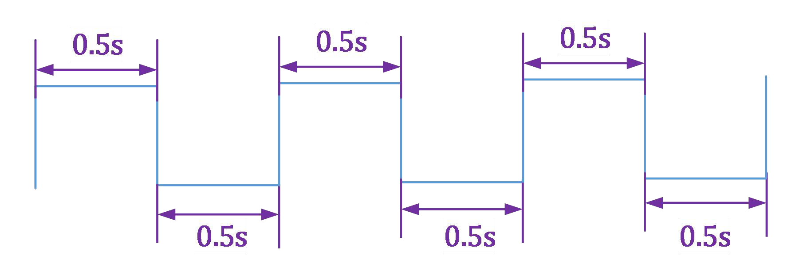

01 流水灯实验例程
1.LED 流水灯实验例程
1.1 MES2L100HP 开发板简介
MES2L100HP 开发板有8 个用户LED 灯（LED1～8），FPGA 输出高电平时对应的LED 灯亮灯（详情请查看“MES2L100HP 开发板硬件使用手册”）。
1.2 实验目的
控制8 个LED 灯按顺序依次点亮和熄灭。
1.3 实验原理
通常的时，分，秒的计时进位大家应该不陌生；1 小时=60 分钟=3600 秒，当时针转动1 小时，秒针跳动3600 次；
{kind=link}
在数字电路中的时钟信号也是有固定的节奏的，这种节奏的开始到结束的时间,我们通常称之为周期（T）。
微信公众号：小眼睛FPGA |
www.meyesemi.com |
|---|---|
{kind=link}
控制LED 周期性的维持0.5s 亮,0.5s 灭,需要控制IO 输出0.5s 高电平,0.5s 低电平周期变化,如下图波形:
{kind=link}
1.4 实验源码设计
1.4.1文件头设计
在module 之前添加文件头，文件头中包含信息有：公司，作者，时间，设计名，工程名，模块名，目标器件，EDA 工具(版本)，模块描述，版本描述（修改描述）等信息；以及仿真时间单位定义；
2 / 8
信公众号： 小眼睛FPGA |
www.m eyesemi.com |
|||
|---|---|---|---|---|
1 |
|
|||
2 |
||||
3 |
//Company |
|
||
4 |
|
: |
||
5 |
// WeChat public account : MEYESEMI |
|||
6 |
//Engineer |
: Nill |
||
7 |
// |
|||
8 |
//Create Date |
|
||
9 |
//Design Name |
: led_test |
||
10 |
//Module Name |
: led_test |
||
11 |
|
led_light |
||
12 |
//Target Devices |
: Pango |
||
13 |
//Tool Versions |
: |
||
14 |
Description |
: |
||
15 |
// |
|||
16 |
ependencies |
: |
||
17 |
// |
|||
18 |
//Revision |
: Revision 0.01 - File Created |
||
19 |
/ /Additional Comments |
: |
||
20 |
// |
|||
21 |
||||
22 |
`define UD #1 |
1.4.2设计module
1.4.2.1 创建module，确定输入输出信号
module led_light( |
clk, |
// input clock, the frequency is 50MHz |
|---|---|---|
input |
||
input |
rstn, |
// input reset signal, active at low |
output [7:0] |
led |
// output LED control signal , lignting at high |
); |
|---|
endmodule |
|---|
3 / 8
信公众号：小眼睛FPGA |
www.meyesemi.com |
|
|---|---|---|
1 |
reg [23:0] led_light_cnt; |
2
3
4
5
6
7
8
9
10
11
12
|
// |
time counter |
|---|---|---|
always @(posedge
clk) //
if(!rstn)
led_light_cnt <=
`UD 24’d0;
else
if(led_light_cnt
==
24’d13_499_999)
led_light_cnt <=
`UD 24’d0;
else
led_light_cnt <=
`UD
led_light_cnt +
24’d1;
end
|
当计数器计数到24’d13_499_999 时，计数过程包含了从0～24’d13_499_999 的时钟周期，故而总时长时24’d13_500_000 ×
微信公众号：小眼睛FPGA |
www.meyesemi.com |
|---|---|
1.4.3完整的Module（不含注释）
1 `timescale 1ns / 1ps
2 |
`define UD #1 |
clk, |
|---|---|---|
3 |
||
4 |
module led_light( |
|
5 |
input |
|
6 |
input |
rstn, |
7 |
output [7:0] |
led |
8 |
); |
24
25
12
13
14
15
16
17
18
26
|
// led status change
always @(posedge clk)
begin
if(!rstn)
led_status <= `UD
8’b0000_0001;
else if(led_light_cnt ==
24’d13_499_999)
led_status <= `UD {
led_status[6:0],
led_status[7] }; end
assign led = led_status;
|
|---|---|
27
28 endmodule
29
1.4.4硬件管脚分配
MES2L100HP 的LED 和CLK 与FPGA 的IO 连接部分的原理图如下，详情可查看硬件使用手
册或原理图：
5 / 8
微信公众号：小眼睛FPGA |
www.meyesemi.com |
|---|---|
{kind=link}
信号 |
PG2L100H Pin |
|---|---|
LED1 |
F13 |
LED2 |
F14 |
LED3 |
E13 |
LED4 |
E14 |
LED5 |
E16 |
LED6 |
D16 |
LED7 |
F16 |
LED8 |
E17 |
复位设计是低电平有效，MES2L100HP 开发板提供了8 个用户按键（K1～8），按键低电平有效，但按键按下时，IO 上的输入电压为低；当没有按下按键时，IO 上的输入电压为高电平；选择任一个用户按键作为复位输入即可。
6 / 8
微信公众号：小眼睛FPGA |
www.meyesemi.com |
|---|---|
{kind=link}
1.5 实验步骤
1.5.1PSD 软件相关
（1）PSD 软件安装包获取：软件版本：PDS_2022.1（注：本文档中所有实验均使用PDS_2022.1 版本实现）软件安装包位置：MES2L100HP\5_软件工具\PDS2022.1（2）PSD 软件license 获取：联系“深圳市小眼睛科技”客服人员获取。（3）PSD 软件安装流程：PSD 软件安装步骤参考文档：MES2L100HP\1_教程说明\工具使用篇\ 01_PDS 安装指导手册
7 / 8
微信公众号：小眼睛FPGA |
www.meyesemi.com |
|---|---|
{kind=link}
8 / 8